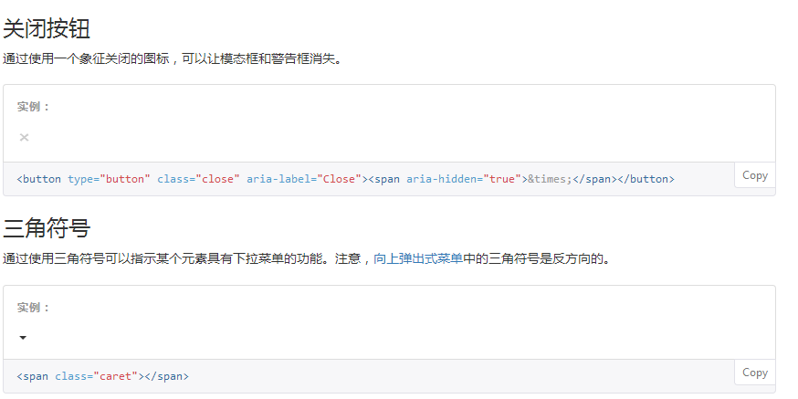
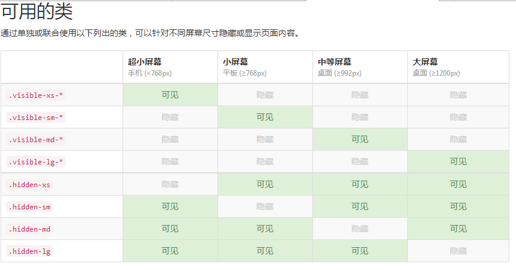

Bootstrap框架汇总:
全局css样式：设置全局css样式；基本的HTML元素均可以通过class设置样式并得到增强效果，还有先进的栅格系统
- 概览：深入了解Bootstrap底层结构的关键部分，包括我们让web开发变得更好、更快、更强壮的最佳实践
- html5文档类型：Bootstrap使用到的html元素和css属性需要将页面设置为html5文档类型。在你的项目中的每一个页面都要参照下面的格式进行设置。
....
- 移动设备优先：在 Bootstrap 2 中，我们对框架中的某些关键部分增加了对移动设备友好的样式。而在 Bootstrap 3 中，我们重写了整个框架，使其一开始就是对移动设备友好的。这次不是简单的增加一些可选的针对移动设备的样式，而是直接融合进了框架的内核中。也就是说，Bootstrap 是移动设备优先的。针对移动设备的样式融合进了框架的每个角落，而不是增加一个额外的文件。
为了确保适当的绘制和触屏缩放，需要在 之中添加 viewport 元数据标签。
- Normalize.css：为了增强跨浏览器表现的一致性，我们使用了Normalize.css，这是由Nicolas Gallagher和Jonathan Neal维护的一个css重置样式库
- 布局容器：Bootstrap 需要为页面内容和栅格系统包裹一个 .container 容器。我们提供了两个作此用处的类。注意，由于 padding 等属性的原因，这两种 容器类不能互相嵌套。 .container 类用于固定宽度并支持响应式布局的容器。.container-fluid类用于100%宽度，占据全部视口（viewport）的容器
- 栅格系统：Bootstrap 提供了一套响应式、移动设备优先的流式栅格系统，随着屏幕或视口（viewport）尺寸的增加，系统会自动分为最多12列。它包含了易于使用的预定义类，还有强大的mixin 用于生成更具语义的布局。
栅格系统用于通过一系列的行（row）与列（column）的组合来创建页面布局，你的内容就可以放入这些创建好的布局中。
将最外面的布局元素 .container 修改为 .container-fluid，就可以将固定宽度的栅格布局转换为 100% 宽度的布局。如果在一个 .row 内包含的列（column）大于12个，包含多余列（column）的元素将作为一个整体单元被另起一行排列。即便如此，你也不免会碰到一些问题，例如，在某些阈值时，某些列可能会出现比别的列高的情况。为了克服这一问题，建议联合使用 .clearfix 和 响应式工具类。 使用 .col-md-offset-* 类可以将列向右侧偏移。这些类实际是通过使用 * 选择器为当前元素增加了左侧的边距（margin）。例如，.col-md-offset-4 类将 .col-md-4 元素向右侧偏移了4个列（column）的宽度。为了使用内置的栅格系统将内容再次嵌套，可以通过添加一个新的 .row 元素和一系列 .col-sm-* 元素到已经存在的 .col-sm-* 元素内。被嵌套的行（row）所包含的列（column）的个数不能超过12（其实，没有要求你必须占满12列）。通过使用 .col-md-push-* （排后面）和 .col-md-pull-*（排前面） 类就可以很容易的改变列（column）的顺序。 - 标题：HTML 中的所有标题标签，h1 - h6 均可使用。另外，还提供了 .h1 到 .h6 类，为的是给内联（inline）属性的文本赋予标题的样式。
在标题内还可以包含 标签或赋予 .small 类的元素，可以用来标记副标题。如下：
我的世界我的未来
- 页面主体：Bootstrap 将全局 font-size 设置为 14px，line-height 设置为 1.428。这些属性直接赋予 元素和所有段落元素。另外，
（段落）元素还被设置了等于 1/2 行高（即 10px）的底部外边距（margin）。
文本元素：mark可以改变字体的背景颜色如:haha.对于被删除的文本使用 del 标签。如:你好世界。对于没用的文本使用 s 标签。如：早上好（我也没分清楚）。
额外插入的文本使用 ins标签。为文本添加下划线，使用 u 标签。
将任何 HTML 元素包裹在 blockquote 中即可表现为引用样式。通过赋予 .blockquote-reverse 类可以让引用呈现内容右对齐的效果。
水平排列的描述 .dl-horizontal 可以让 dl内的短语及其描述排在一行。开始是像 dl 的默认样式堆叠在一起，随着导航条逐渐展开而排列在一行。
自动截断 通过 text-overflow 属性，水平排列的描述列表将会截断左侧太长的短语。在较窄的视口（viewport）内，列表将变为默认堆叠排列的布局方式。 - 表格：为任意
标签添加 .table 类可以为其赋予基本的样式 — 少量的内补（padding）和水平方向的分隔线。.table-striped 类可以给 tbody 之内的每一行增加斑马条纹样式。添加 .table-bordered 类为表格和其中的每个单元格增加边框。通过添加 .table-hover 类可以让 tbody 中的每一行对鼠标悬停状态作出响应。通过添加 .table-condensed 类可以让表格更加紧凑，单元格中的内补（padding）均会减半。
响应式表格 将任何 .table 元素包裹在 .table-responsive 元素内，即可创建响应式表格，其会在小屏幕设备上（小于768px）水平滚动。当屏幕大于 768px 宽度时，水平滚动条消失。垂直方向的内容截断 响应式表格使用了 overflow-y: hidden 属性，这样就能将超出表格底部和顶部的内容截断。特别是，也可以截断下拉菜单和其他第三方组件。- 表单：单独的表单控件会被自动赋予一些全局样式。所有设置了 .form-control 类的 input、textarea和 select 元素都将被默认设置宽度属性为 width: 100%;。 将 label 元素和前面提到的控件包裹在 .form-group 中可以获得最好的排列。

不要将表单组和输入框组混合使用 不要将表单组直接和输入框组混合使用。建议将输入框组嵌套到表单组中使用。内联表单 为- 图片：响应式图片 在 Bootstrap 版本 3 中，通过为图片添加 .img-responsive 类可以让图片支持响应式布局。其实质是为图片设置了 max-width: 100%;、 height: auto; 和 display: block; 属性，从而让图片在其父元素中更好的缩放。 如果需要让使用了 .img-responsive 类的图片水平居中，请使用 .center-block 类，不要用 .text-center。 请参考助手类章节 了解更多关于 .center-block 的用法。
- 辅助类：情境文本颜色 通过颜色来展示意图，Bootstrap 提供了一组工具类。这些类可以应用于链接，并且在鼠标经过时颜色可以还可以加深，就像默认的链接一样。情境背景色 和情境文本颜色类一样，使用任意情境背景色类就可以设置元素的背景。链接组件在鼠标经过时颜色会加深，就像上面所讲的情境文本颜色类一样。
- 显示或隐藏内容 .show 和 .hidden 类可以强制任意元素显示或隐藏(对于屏幕阅读器也能起效)。这些类通过 !important 来避免 CSS 样式优先级问题，就像 quick floats 一样的做法。注意，这些类只对块级元素起作用，另外，还可以作为 mixin 使用。 .hide 类仍然可用，但是它不能对屏幕阅读器起作用，并且从 v3.0.1 版本开始就不建议使用了。请使用 .hidden 或 .sr-only 。 另外，.invisible 类可以被用来仅仅影响元素的可见性，也就是说，元素的 display 属性不被改变，并且这个元素仍然能够影响文档流的排布。
- 表单：单独的表单控件会被自动赋予一些全局样式。所有设置了 .form-control 类的 input、textarea和 select 元素都将被默认设置宽度属性为 width: 100%;。 将 label 元素和前面提到的控件包裹在 .form-group 中可以获得最好的排列。